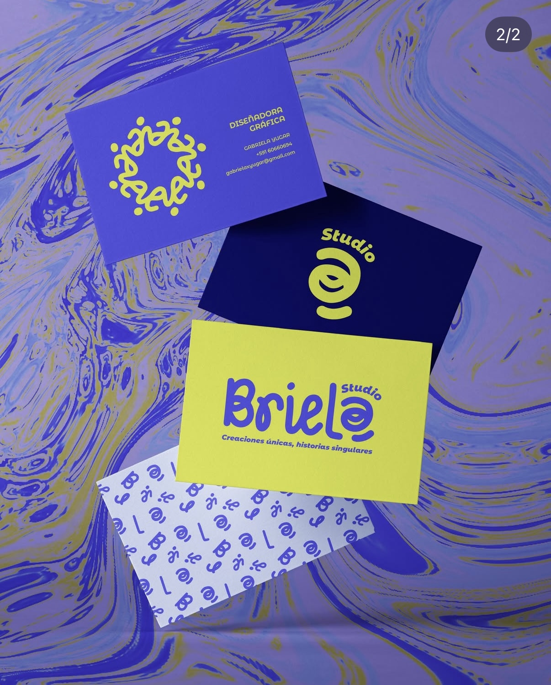
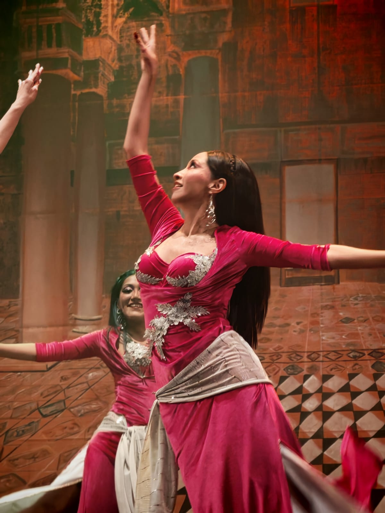
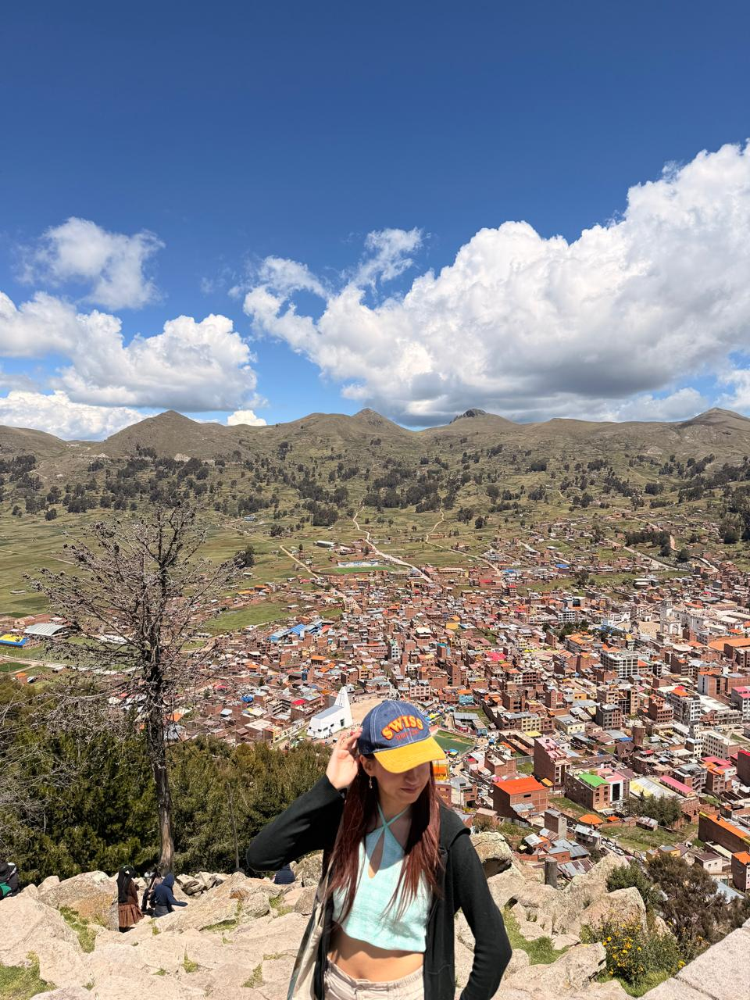

SOBRE MÍ
Hola, soy Gabriela.
Soy una apasionada por el diseño en general y sus diferentes ramas. Me interesa explorar nuevas formas de expresión, descubrir nuevas perspectivas y crear soluciones que comuniquen ideas.
Actualmente estudio Diseño y disfruto encontrar inspiración en el arte, la cultura, los viajes y las experiencias que forman parte de mi vida.
Mis intereses:

Diseño
Me gusta explorar nuevas formas de expresión.

Danza
Una forma de expresarme y conectar conmigo misma.

Viajes
Conocer lugares y descubrir nuevas experiencias.
UNA FORMA DE VER EL MUNDO
La tranquilidad dentro del caos.
Encuentro inspiración en aquellos momentos en los que puedo detenerme y observar lo que sucede a mi alrededor, incluso cuando todo parece estar lleno de movimiento.